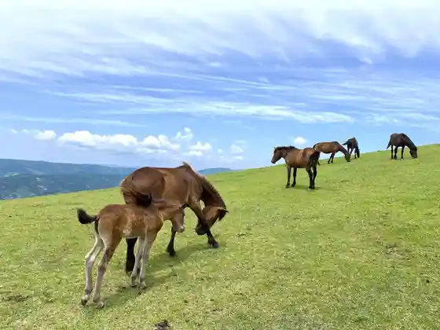
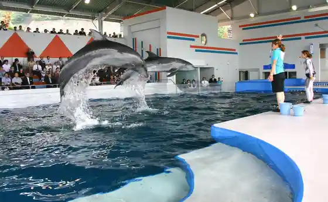
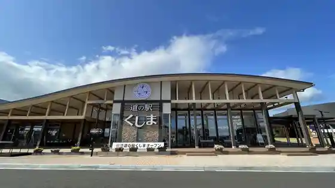

Toimisaki
Kushima, Miyazaki · 0987-72-0479 · Official / source link

Sachi Shima
Kushima, Miyazaki · 0987-72-0479 · Official / source link
Shibushi Wan Daikoku Iruka Land
Kushima, Miyazaki · 0987-27-3939 · Official / source link

Roadside Station Kushima
Kushima, Miyazaki · 0987-72-0800 · Official / source link

Misaki Shrine
Kushima, Miyazaki · 0987-72-0479 · Official / source link
Toimisaki Kanko Koryu Kan PAKALAPAKA
Kushima, Miyazaki · 0987-27-3477 · Official / source link
Toimisaki Lighthouse
Kushima, Miyazaki · 0987-76-1838 · Official / source link
Kyu Yoshimatsu Ie House
Kushima, Miyazaki · 0987-72-6511 · Official / source link
Takamatsu Beach
Kushima, Miyazaki · 0987-72-0479 · Official / source link
Takamatsu Kyanpu Park
Kushima, Miyazaki · 0987-55-1126 · Official / source link
Kushima Shrine
Kushima, Miyazaki · 090-9792-2652 · Official / source link
Koigaura
Kushima, Miyazaki · 0987-55-1128 · Official / source link
Kushima Ei Rikujokyogijo
Kushima, Miyazaki · 0987-72-5262 · Official / source link
Kushima Ei Kyujo
Kushima, Miyazaki · 0987-72-5262 · Official / source link
Kushima Tami Sogo Gym
Kushima, Miyazaki · 0987-72-5262 · Official / source link
Kushima Ei Kyudo Ba
Kushima, Miyazaki · 0987-72-5262 · Official / source link
Kushima Ei Shitsunai Taiiku Shisetsu
Kushima, Miyazaki · 0987-72-5262 · Official / source link
Kushima Ei Tenisukoto
Kushima, Miyazaki · 0987-72-5262 · Official / source link
Nichinan Kushima Gorufukosu
Kushima, Miyazaki · 0987-71-3111 · Official / source link